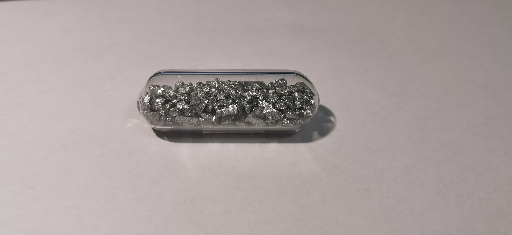
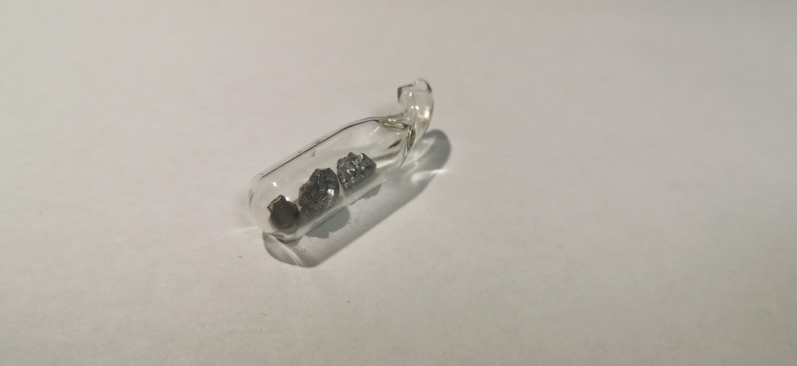
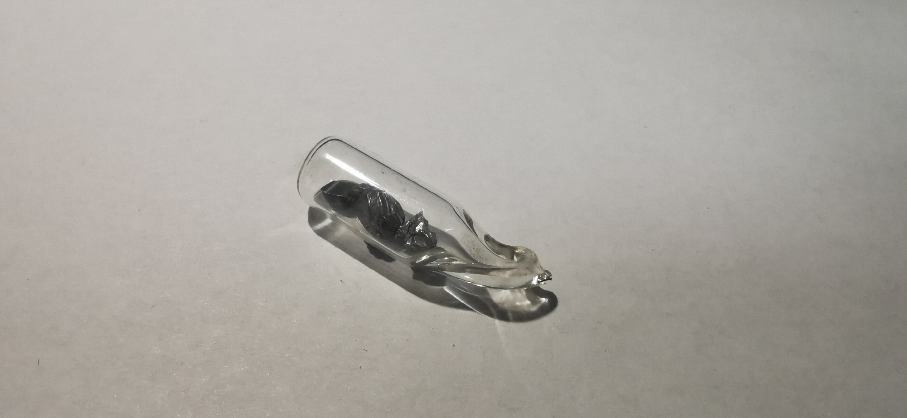

铬
2019.1 铬粒 99.0% 来自冥灵 
工业上常见的纯铬制备方法大概只有电解和气相沉积了（热置换似乎并不常见，只有在镀铬时常用），这支铬粒大概是电解得到的。铬是最硬的金属，很脆，这虽然限制了其在工业上单独出面的使用，但是由此产生的铬碎粒十分美观，尤其是加上铬美丽的金属光泽，这支铬也是我十分喜欢的一支玻封。
2019.11 气相沉积(CVD)铬 来自残月  
CVD：气相沉积是一种制备单质的常见方法，工业上多用于提纯金属或非金属，这样制得的铬不仅纯度高，而且色泽与其他方法迥异（但只能得到较小块金属）。根据《无机化学丛书》上对CVD法制铬的记载，应该是在900℃下使铬与碘蒸汽反应制得碘化铬气体，然后使其与温度更高到1000-1300℃的热表面接触分解，沉积出铬单质。在其他单质的CVD制备中，碘化物或氟化物也是良好的选择。
玻封：残月告诉我这种气象结晶铬产自俄罗斯，国内实验室没有制备的条件。得到后是密封袋子装起来的几块，然而我在玩弄时不幸弄丢了一块，因而我决定把剩下的玻封起来，不过由于这是我第一次尝试玻封，再加上并不了解行业内所用的试管，我只有一个管壁十分厚的试管，这让玻封工作十分困难，最后得到的产品也不美观。